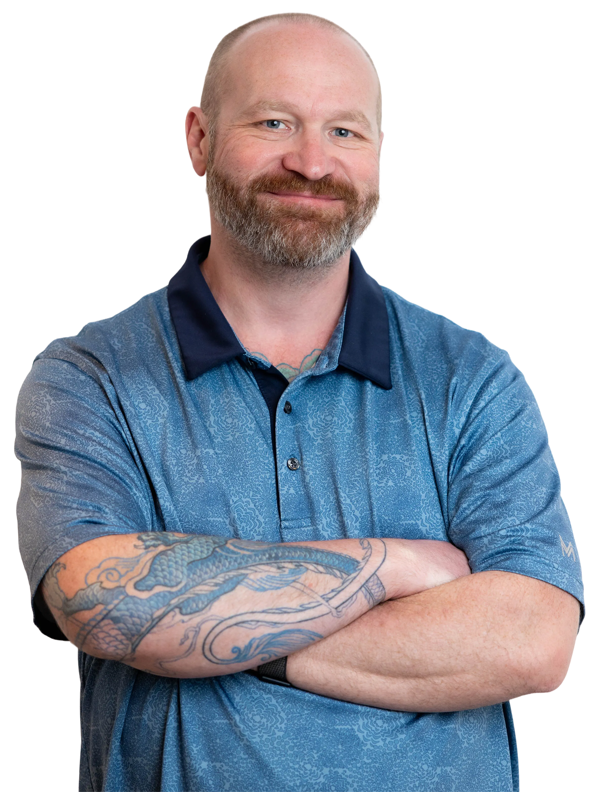
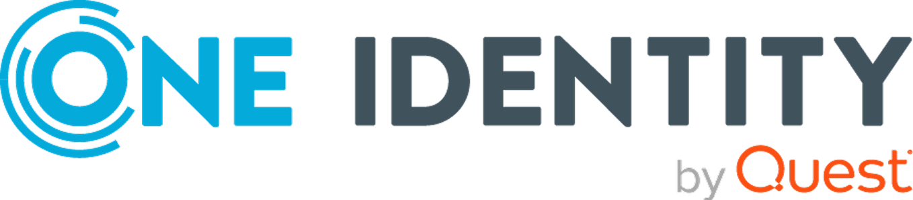

Solving complex product problems through research, collaboration, and design.
I'm a product designer specializing in complex B2B SaaS products used to manage intricate workflows, business rules, and technical constraints. Great products emerge when cross-functional teams build a shared understanding of the problem they're trying to solve. I help bring together user needs, business goals, and technical realities to create solutions that work for customers and the business alike.
Experience Solving Complex Problems In
- Fintech
- Cybersecurity
- Business Management
- Project & Program Management
What People Say About Working With Me

Rusty took me on as a Junior Designer and quickly enabled my journey and development as a designer. He enabled me in every way that he could and helped me to learn the skills required to become a better designer. Rusty helped to guide our team from a very small team of 3 when I joined the company nearly 3 years ago to a team of 6. He helped us transition from XD to Figma and to develop our design system and team to a much higher level of design maturity.
Rusty was a fantastic manager guiding our team and fostering a positive culture that motivated us to excel.
Our team design reviews were largely so effective due to Rusty's ability to quickly understand designs, user needs and bring clarity and sound advice. Additionally, gently guiding constructive design feedback and refocusing team members when required.
Rusty's management style struck an ideal balance between autonomy and active involvement, making every team member feel valued and understood. He had a unique talent for empowering us, recognizing our individual passions, and addressing our needs effectively.
Rusty took me on as a Junior Designer and quickly enabled my journey and development as a designer. He enabled me in every way that he could and helped me to learn the skills required to become a better designer. Rusty helped to guide our team from a very small team of 3 when I joined the company nearly 3 years ago to a team of 6. He helped us transition from XD to Figma and to develop our design system and team to a much higher level of design maturity.
Rusty was a fantastic manager guiding our team and fostering a positive culture that motivated us to excel.
Our team design reviews were largely so effective due to Rusty's ability to quickly understand designs, user needs and bring clarity and sound advice. Additionally, gently guiding constructive design feedback and refocusing team members when required.
Rusty's management style struck an ideal balance between autonomy and active involvement, making every team member feel valued and understood. He had a unique talent for empowering us, recognizing our individual passions, and addressing our needs effectively.